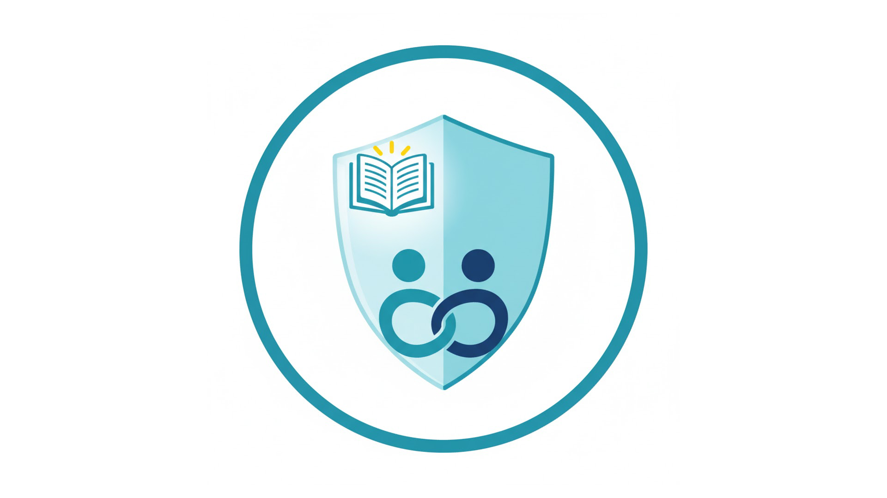

法律認知的斷層，不該成為犯行的藉口。
本平台透過資訊科技，將隱藏在判決書中的法律代價透明化、可查詢。 我們的作用是讓使用者可以直接看到 **「行為」與「後果」** 的連結， 提供一個低門檻、高威懾的法律風險教育平台。
開始查詢：查看行為後果 →霸凌行為後果透明化資訊平台
本平台透過資訊科技，將隱藏在判決書中的法律代價透明化、可查詢。 我們的作用是讓使用者可以直接看到 **「行為」與「後果」** 的連結， 提供一個低門檻、高威懾的法律風險教育平台。
開始查詢：查看行為後果 →